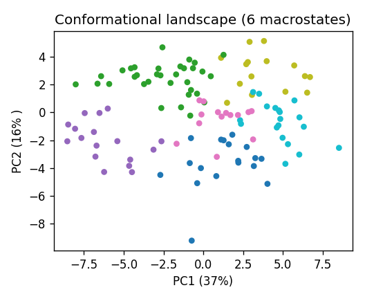
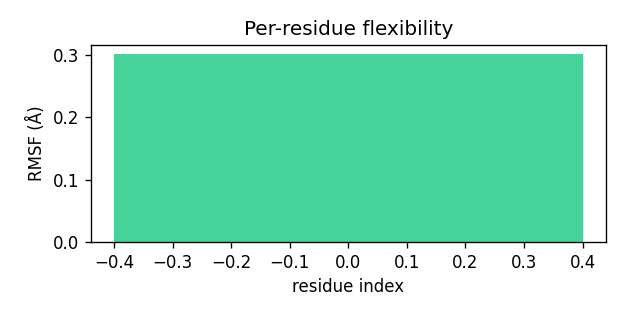
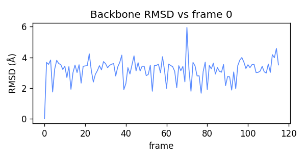

TrajMine — mechanism report
2K39 ubiquitin ensemble · 116 frames · 76 residues · 6 macrostates
Mechanistic summary
This ubiquitin ensemble (2K39) samples six distinct conformational macrostates with modest population bias (28% dominant state), indicating significant conformational heterogeneity around a relatively stable core (RMSD ~3.2 Å). The flexibility profile reveals enhanced dynamics at both the C-terminal tail (GLY75-76, ARG74, LEU73) and the LYS48/GLY47/ALA46 region, with PC1 (37% variance) capturing concerted motions involving these sites—mechanistically consistent with allosteric coupling between the recognition surface around K48 (critical for polyubiquitin chain formation) and the flexible C-terminus. The substantial coil fraction (48%) and dominance of terminal/loop residues in the motion analysis suggest that functional promiscuity in ubiquitin recognition arises from conformational breathing that modulates both the hydrophobic patch accessibility and C-terminal positioning. The multi-state landscape with PC1+PC2 capturing only 53% of variance indicates that ubiquitin's binding versatility emerges from sampling orthogonal conformational modes beyond simple hinge-like motions.
Key numbers
mean RMSD 3.19 Åmax RMSD 5.95 Å
mean RMSF 1.35 ÅPC1 37%
PC1+2 53%state pops 28%, 16%, 16%, 15%, 13%, 12%
Conformational landscape
Per-residue flexibility
Backbone RMSD
Secondary structure helix 20%sheet 32%coil 48%
Most flexible residues: GLY76, GLY75, ARG74, LEU73, LEU8, THR9, ARG72, GLY10
Dominant-motion drivers (PC1): GLY76, GLY75, ARG74, LEU73, LYS48, LEU50, GLY47, ALA46
Generated by TrajMine — a tool I built that turns a raw MD trajectory into a mechanism
report. I'd love to bring this ML/analysis tooling to your group. — Gianangelo Dichio